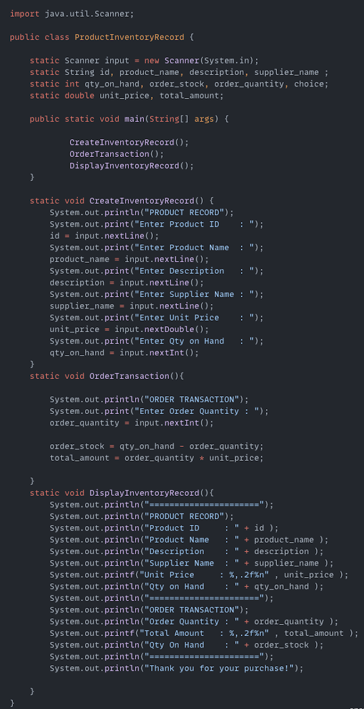
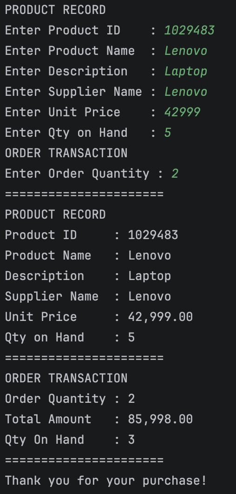
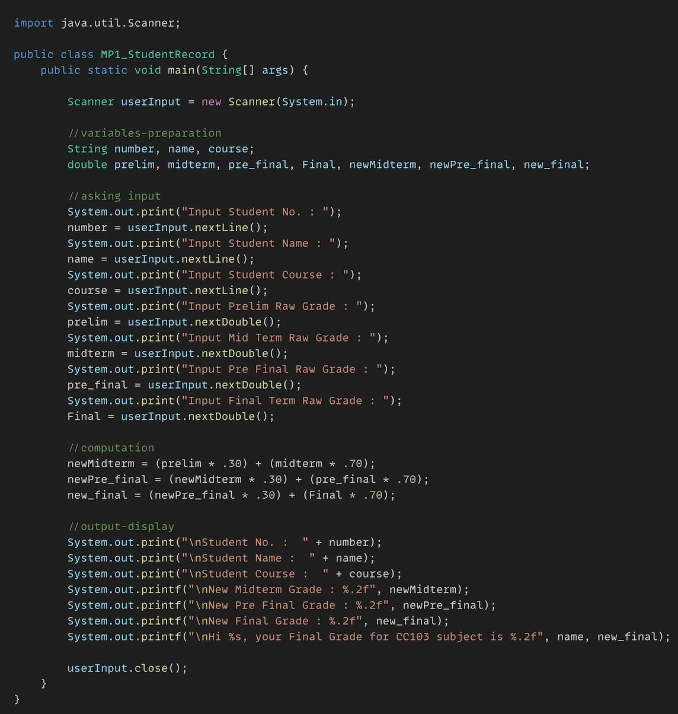
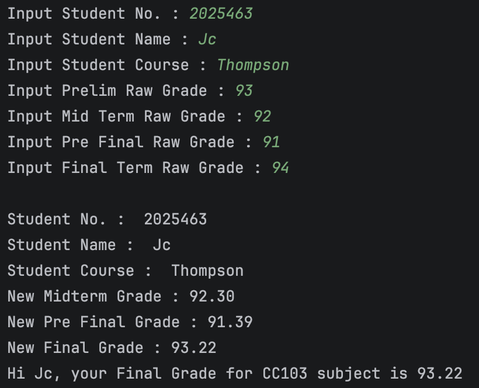
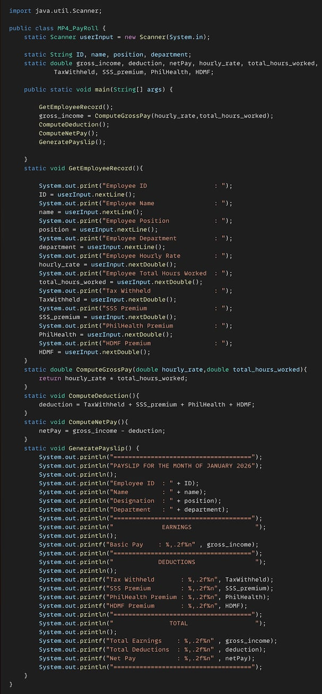
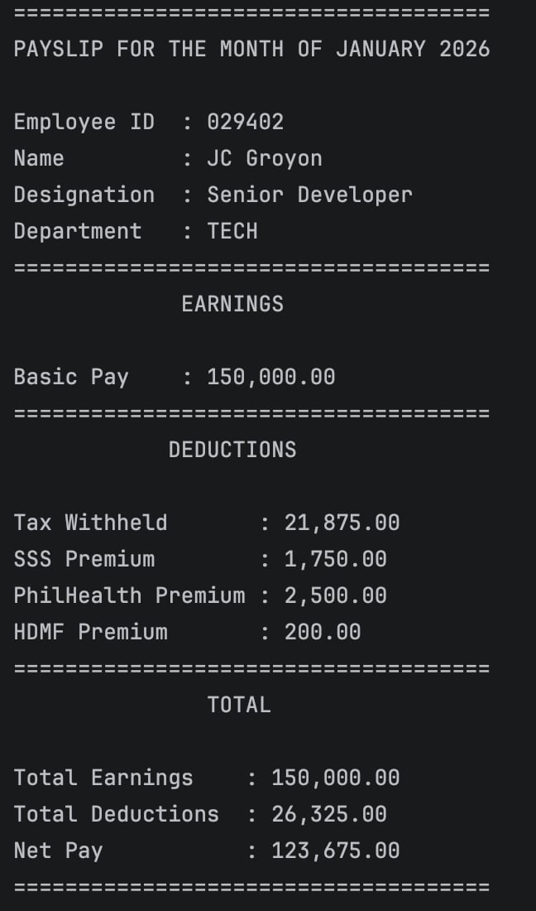

This Java program is a simple Product Inventory Record System. It allows the user to enter product details, process an order transaction by calculating the total amount and updating the remaining stock, then displays the complete inventory record and transaction summary.


This Java program is a Student Grade Computation System that collects a student's number, name, course, and raw grades for each grading period. It calculates the Midterm, Pre-Final, and Final grades using the required percentage weights and displays the computed results along with the student's final grade.


This Java machine problem is a simple Payroll System that demonstrates the use of methods, variables, user input, and basic arithmetic operations. It accepts employee information, computes the gross income based on hourly rate and total hours worked, calculates the total deductions (Tax, SSS, PhilHealth, and HDMF), determines the net pay, and generates a formatted payslip showing the employee's earnings, deductions, and final salary.

